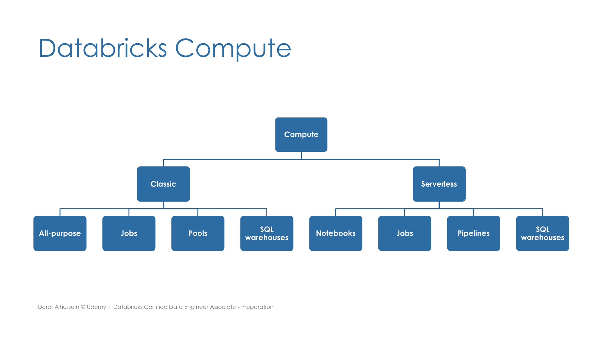
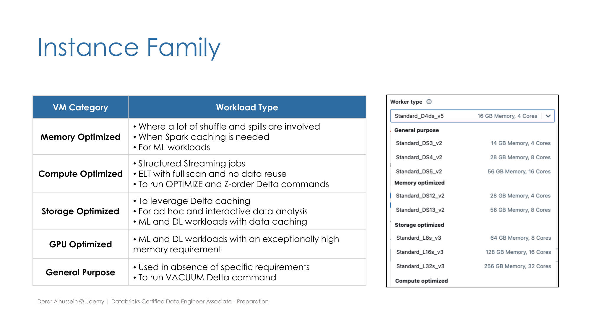
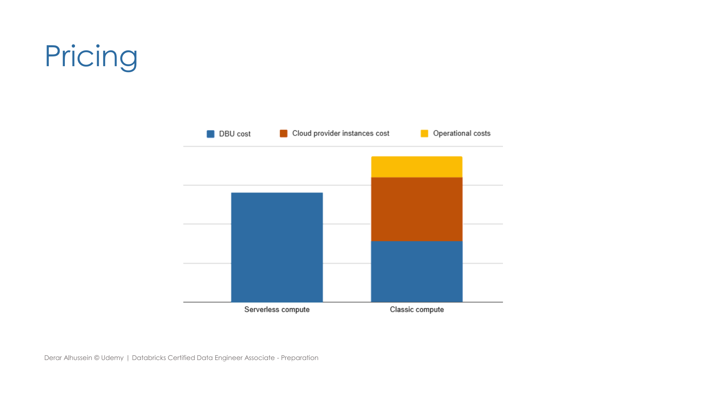

Section 1 · Databricks Intelligence Plattform · Quelle: Udemy-Kursmaterial „Cluster Best Practices“, ergänzt mit Databricks-Dokumentation
Kapitel 2 dieser Section hat die vier Compute-Typen (All-Purpose, Job, SQL-Warehouse, Serverless) und ihre Kostenlogik bereits vorgestellt, Section 6 Kapitel 6 die Spot-Instance-Konfiguration. Dieses Kapitel ergänzt zwei praktische Bausteine der Cluster-Konfiguration, die dort noch nicht behandelt wurden: die Wahl des richtigen Instance-Typs je nach Workload und Instance Pools zur Beschleunigung des Cluster-Starts.
Sämtliche Compute-Typen aus Kapitel 2 lassen sich einer von zwei übergeordneten Kategorien zuordnen: Classic Compute (All-Purpose, Job, Pools, SQL-Warehouses – die Infrastruktur wird vom Cloud-Anbieter bereitgestellt und ist konfigurierbar) und Serverless Compute (Notebooks, Jobs, Pipelines, SQL-Warehouses – Databricks verwaltet die Infrastruktur vollständig selbst).

Bei Classic Compute lässt sich die zugrunde liegende virtuelle Maschine gezielt nach Workload-Typ auswählen. Die falsche Wahl kostet entweder unnötig Geld (überdimensioniert) oder Performance (unterdimensioniert):
| VM-Kategorie | Geeignet für |
|---|---|
| Memory Optimized | Umfangreiches Shuffling/Spilling, Spark-Caching, speicherintensive ML-Workloads |
| Compute Optimized | Structured-Streaming-Jobs, ELT mit vollständigem Scan ohne Datenwiederverwendung, OPTIMIZE/ZORDER |
| Storage Optimized | Delta-Caching, Ad-hoc-/interaktive Analysen, ML/DL-Workloads mit Daten-Caching |
| GPU Optimized | ML/DL-Workloads mit außergewöhnlich hohem Speicherbedarf |
| General Purpose | Keine speziellen Anforderungen; VACUUM |

Spot-Instances als weiteres Mittel zur Kostensenkung – inklusive der bewährten Driver-on-Demand/Worker-als-Spot-Konfiguration und konkreter Ersparnis-/Ausfallraten je Instanztyp – behandelt bereits Section 6, Kapitel 6 ausführlich.
Ein Instance Pool ist eine Menge bereits laufender, ungenutzter virtueller Maschinen, die auf ihren Einsatz warten. Wird ein neuer Cluster (oder eine Autoscaling-Erweiterung) aus einem Pool heraus erstellt, entfällt die sonst übliche VM-Boot-Zeit – Cluster-Start und Autoscaling werden dadurch spürbar beschleunigt. Wichtig für die Kostenkalkulation: Databricks selbst berechnet für ungenutzte Instanzen im Pool keine DBU-Gebühr, der Cloud-Anbieter stellt diese Instanzen aber weiterhin in Rechnung, da sie technisch im eigenen Cloud-Konto laufen.
Ergänzend zur Übersicht aus Kapitel 2: Bei klassischen (Pro) SQL-Warehouses greift man konkret dann, wenn entweder in der gewählten Cloud-Region kein Serverless-Warehouse verfügbar ist, oder wenn ein benutzerdefiniertes Netzwerk-Setup benötigt wird – etwa um aus dem SQL-Warehouse heraus Datenbanken oder Event-Busse im eigenen Cloud-Netzwerk oder On-Premises anzubinden. Serverless-Warehouses bleiben für die meisten Fälle (ETL, BI, explorative Analysen) die einfachere und schneller startende Wahl.
